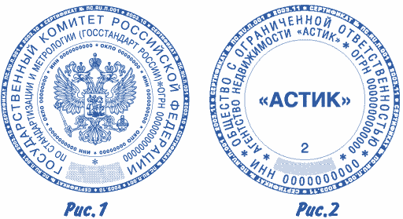

Национальный стандарт
1. Разработан на основе технических требований ГОСТ Р 51511-2001 Корпорацией Профессиональных Изготовителей Печатей и Штампов совместно с Всероссийским научно-исследовательским институтом полиграфии (ОАО ИНПОЛ).
2. Обсуждался на отраслевом совещании Корпорации Профессиональных Изготовителей Печатей и Штампов 24 июня 2003 года и рекомендован в практическое использование с 01 июля 2003 года Советом НП "КИП". Прошел публичное обсуждение результатов применения стандарта на научно-практической конференции Корпорации Профессиональных Изготовителей Печатей и Штампов 27-29 октября 2003 года в г.Москве.
1. Область применения
Настоящий стандарт устанавливает форму, размеры и технические требования к мастичным удостоверительным печатям, выполненным в соответствии с требованиями Федерального закона 08.08.2001 № 129-ФЗ "О государственной регистрации юридических лиц".
2. Определения
В настоящем стандарте применяют следующие термины с соответствующими определениями:
2.1. Печать: Устройство, содержащее клише печати для нанесения оттисков на бумагу.
2.2. Оттиск: Изображение клише печати на бумаге.
2.3. Клише печати: Элемент печати, содержащий зеркальное отображение оттиска печати.
2.4. Мастичная печать: Печать, обеспечивающая нанесение оттиска штемпельной краской.
2.5. Штемпельная краска: Специальное красящее вещество, предназначенное для нанесения оттисков на бумагу с помощью клише печати.
2.6. Печать мастичная удостоверительная: мастичная печать, оттиск которой удостоверяет право подписи физического лица от имени юридического лица - владельца печати.
2.7. Печать с воспроизведением государственного герба Российской Федерации - мастичная удостоверительная печать, имеющая в центре клише печати зеркальное отображение государственного герба Российской Федерации.
2.8. Штемпельная подушка: Материал, несущий в своем объеме штемпельную краску, которая переносится на печатающие элементы клише печати при его контакте со штемпельной подушкой.
2.9. Печатающий элемент: Отдельный участок клише печати, воспринимающий штемпельную краску и передающий ее на бумагу.
2.10. Пробельный элемент: Отдельный участок клише печати, не воспринимающий штемпельную краску и не передающий ее на бумагу.
3. Технические требования к мастичным удостоверительным печатям
3.1. Клише мастичной удостоверительной печати изготавливают круглой формы (рисунок 1, 2). Минимальный диаметр клише печати - 40 мм, максимальный диаметр - 50_1 мм.
3.2. По внешнему кольцу клише печати ограничивается ободом толщиной 1.3+0.1 мм, на котором располагается микротекст в негативном начертании (белый текст на черном фоне) с информацией об изготовителе печати. Микротекст состоит из повторяющейся записи, включающей слово сертификат с указанием его номера, а также год и месяц изготовления печати.
Сертификат должен подтверждать наличие у изготовителя печати технических и технологических возможностей для изготовления указанного вида продукции на должном качественном уровне.
3.3 В центральном поле клише печати располагается в зеркальном изображении:
- Государственный герб Российской Федерации -для организаций, имеющих право использования государственной символики (государственные предприятия или приравненные к ним организации);
- Герб субъекта Российской Федерации для печати государственного учреждения субъекта Федерации или приравненного к ним юридического лица;
- Герб города;
- Название организации, логотип или эмблема - для юридических лиц различных форм собственности;
- Фамилия, имя отчество - для предпринимателей без образования юридического лица. 3.3.1 В печатях с Государственным гербом Российской Федерации, гербом субъектов Федерации государственных учреждений субъектов Федерации или приравненных к ним юридических лиц, а так же с гербом городов, на расстоянии 1 мм от герба располагается по окружности микротекст в позитивном начертании (черный текст на белом фоне). Микротекст заключает информацию о заказчике печати с содержанием идентификационного налогового номера (ИНН ХХХХХХХХХХ), а также по его усмотрению код, по Общероссийскому классификатору предприятий и организаций (ОКПО ХХХХХХХХХ) и т.п. На рисунке 1 для примера показан повторяющийся и ограниченный символами (*) ИНН заказчика печати.
3.3.2. Центральное поле клише печати с гербом Российской Федерации или с иной символикой субъектов Российской Федерации и позитивным микротекстом или содержащее название, логотип, эмблему коммерческого предприятия выделяется окружностью с толщиной линии не более 0.08 мм.
3.3.3. В нижней части центрального поля печати вдоль кольцевой линии против часовой стрелки симметрично относительно вертикальной оси клише печати размещается следующая вспомогательная информация об удостоверительной печати:
- номер печати (если удостоверительная печать для данного юридического лица изготовлена не в единственном экземпляре), обозначаемый арабскими цифрами, начиная с цифры 2 для второй печати. На рисунке 2 запись "2" означает, что оттиск произведен вторым экземпляром печати;
- для печати дубликата, взамен утерянной, ставится буква Д с записанным через дефис порядковым номером дубликата, начиная с римской цифры I для первого дубликата печати.
- допускается заключать вспомогательную информацию о печати в отдельную кольцевую линию в нижней или верхней части центрального поля (например, "для счетов", "для накладных" и т.д.).
3.4. Между кольцевой линией и негативным микротекстом по часовой стрелке и симметрично относительно вертикальной оси клише располагаются концентрические строки информационного поля, содержащие информацию о форме собственности организации и полное наименование юридического лица в именительном падеже, в скобках - его краткое наименование (если таковое имеется), а также ограниченный символами (*) основной государственный регистрационный номер (ОГРН ХХХХХХХХХХХХХ) заказчика печати согласно записи включения в Единый государственный реестр юридических лиц.
3.4.1. Наименование юридического лица должно соответствовать наименованию, закрепленному в учредительных документах. Сокращенное наименование приводится в тех случаях, когда оно закреплено в учредительных документах, и помещается в круглых скобках после полного наименования. Для предпринимателей без образования юридического лица указывается фамилия, имя, отчество, а также ОГРН (15-ти значный номер) индивидуального предпринимателя.

На Рисунке 1 для примера приведено наименование Государственного комитета Российской Федерации по стандартизации и метрологии (Госстандарт Росии) как федерального органа исполнительной власти и его сокращенное наименование. А также ограниченный символами (*) основной государственный - регистрационный номер заказчика (ОГРН ХХХХХХХХХХХХХ).
На Рисунке 2 для примера приводится наименование Агентства недвижимости "АСТИКС", как открытое акционерное общество, а также ограниченный символами (*) основной государственный - регистрационный номер организации (ОГРН 0000000000000).
3.4.2. Для коммерческих организаций и предпринимателей внизу информационного поля против часовой стрелки и симметрично относительно вертикальной оси клише печати располагается идентификационный налоговый номер организации (ИНН ХХХХХХХХХХ). На рисунке 2 для примера показан ограниченный символами (*) ИНН заказчика печати. По желанию заказчика в кругах информационного поля может располагаться и дополнительная информация о предприятии заказчика: коды ОКПО, КПП, ОКВЭД, государственный регистрационный номер записи о государственной регистрации изменений, вносимых в учредительные документы, или местоположение предприятия - город, область и т.п.
3.4.3. В нижней части информационного поля располагается сектор с элементом защиты печати в виде растрового поля с линеатурой растра не ниже 40 линий на сантиметр.
3.5. Удостоверительные печати должны быть изготовлены таким образом, чтобы при их проверке и использовании на документе оставался четкий оттиск всех элементов изображения. Насыщенность и цветовой тон всех участков оттиска должны быть равномерными. Не допускаются визуально различимые: выдавливание краски за края печатных элементов, недопечатки и непропечатки, искажения деталей изображения на оттиске, а также смазывание и стирание.
3.6. В оттиске должны четко проявляться все обязательные и дополнительные элементы изображения и защиты.
3.7. Специальные требования к упаковке, маркировке и транспортированию удостоверительных печатей не предъявляются.
4. Технические требования к сырью, материалам, покупным изделиям, используемым для изготовления и применения мастичных удостоверительных печатей
4.1. Требования к материалу для изготовления клише печати
4.1.1. Для изготовления клише удостоверительной печати необходимо использовать высококачественную резину, сертифицированную изготовителем как “резина для лазерной гравировки”. Резина должна беспечивать гарантированный срок эксплуатации печати не менее 5 лет без искажения формы, изменения твердости и упругости или образования микротрещин в резине. Необходимо применение резины с жесткостью 40-60 ед. по Шору А, стойкую к низким температурам, солнечному свету и химически стойкую к спиртосодержащим штемпельным краскам.
4.1.2. На печатающей поверхности резины недопустимо присутствие раковин или царапин, визуально различимых в лупу с 15-кратным увеличением, визуально различимых вздутий, растрескиваний и короблений. Набухание резины в водно-спиртовых смесях не должно превышать 5 % массы при любых концентрациях спирта, относительное удлинение резины на разрыв должно быть не менее 200 %. Толщина резины для изготовления печати - не менее 2+0>2 мм.
4.2. Требования к штемпельной подушке и штемпельной краске.
4.2.1. Штемпельная краска гербовой печати должна быть влагостойкой.
4.2.2. Штемпельная подушка и штемпельная краска должны обладать характеристиками, обеспечивающими выполнение требований настоящего стандарта в части пунктов 3.5, 3.6. Недопустима дозаправка подушек штемпельной краской.
4.2.3. При получении оттиска на мелованной и немелованной бумаге впитывание и высыхание штемпельной краски на поверхности бумаги должно происходить не более чем за 10 сек. без остаточного отмарывания. Оттиск должен обладать влагостойкостью, устойчивостью к смазыванию и стиранию.
4.2.4. Штемпельная краска после получения оттиска на мелованной и немелованной бумаге не должна изменять визуально различимую цветовую насыщенность при дневном свете и комнатной температуре в защищенном и не защищенном от прямых солнечных лучей месте, а также геометрические характеристики изображения и характеристики элементов защиты.
Таблица 1 Соотношение размера и глубины пробельных элементов
| Размер пробельного элемента |
Глубина пробельного элемента |
| От 0,03 до 0,1 |
От 0,1 до 0,25 |
| " 0,1 " 0,15 |
" 0,25 " 0,35 |
| " 0,15 " 0,5 |
" 0,35 " 0,8 |
| 0,5 " 5,0 |
" 0,8 " 1,2 |
| " 5,0 |
" 1,2 " 1,8 |
| |
не менее " 1,2 |
5. Технические требования к клише печати, изготовленной из резины
5.1. Толщина резинового клише печати - не менее 2+0>2 мм. Минимально допустимая высота букв шрифта на информационном поле клише печати 1.5+0.1'' мм, ширина штрихов знака шрифта - не менее 0,1+°'01 мм.
5.2. Угол наклона боковых поверхностей печатающих элементов по отношению к перпендикуляру к плоскости клише печати должен быть от 40° до 70°.
5.3. Глубина пробельных элементов соответствует размерам этих элементов согласно таблице 1.
6. Технические требования по защите удостоверительных печатей от подделки
6.1. Удостоверительные печати должны нести в себе не менее трех обязательных элементов защиты от подделки:
6.1.1. Микротекст типа "белый текст на черном фоне".
6.1.2. Микротекст типа "черный текст на белом фоне" (для печатей с изображением герба или с иной символикой субъектов Российской Федерации). Размер элементов микротекста от 0.5 до 0.8 мм.
6.1.3. Линии толщиной не более 0,08+0-01 мм.
6.1.4. Графическое поле с полутоновым растром и линеатурой не ниже 40 линий на сантиметр.
6.2. Для повышения защиты от подделки удостоверительных печатей могут применяться дополнительные элементы защиты, в том числе:
6.2.1. Специально разработанные для текстовой части печатей шрифты, при этом допускается изменение отдельных букв шрифта, внесение в шрифт в контрольных точках печати дефектов, имитирующих естественные дефекты резины.
6.2.2. Визуально неразличимое изменение геометрических пропорций печати, придание им неправильной формы.
6.2.3. Внесение в изображение печати невидимых при естественном свете, скрытых графических элементов защиты, которые позволяют идентифицировать подлинность оттиска печати.
 Заказать изготовление печатей с дополнительными элементами защиты Заказать изготовление печатей с дополнительными элементами защиты
Информация
|